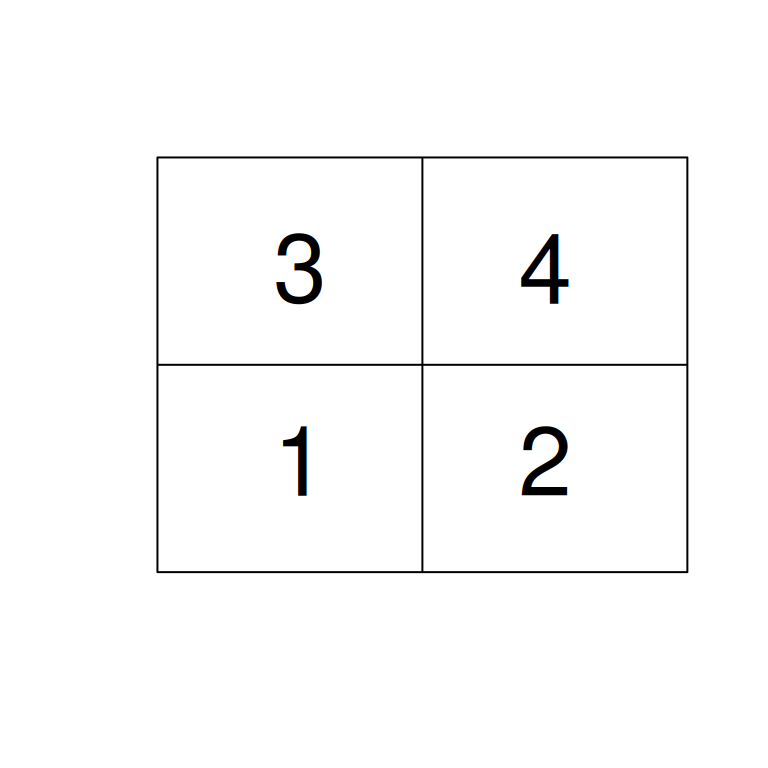
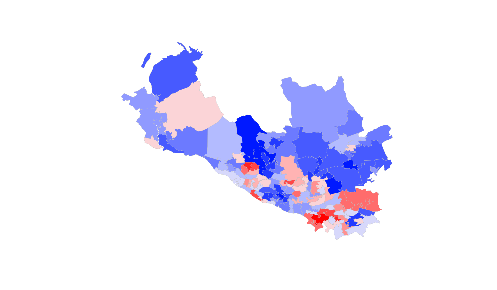
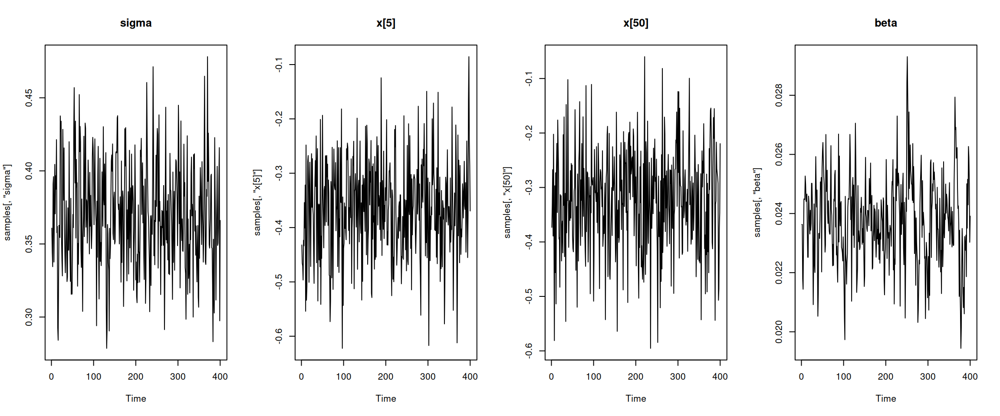
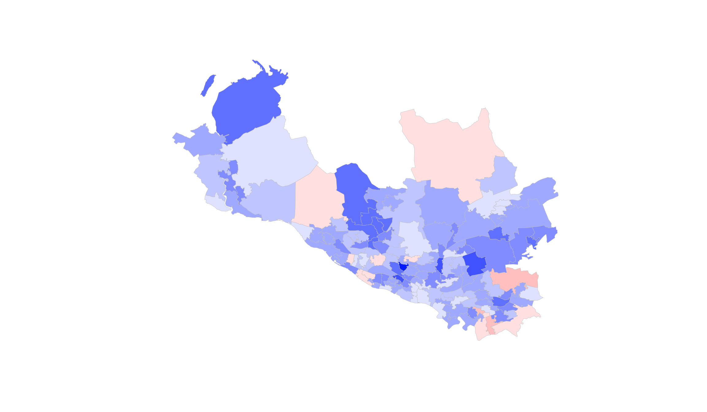
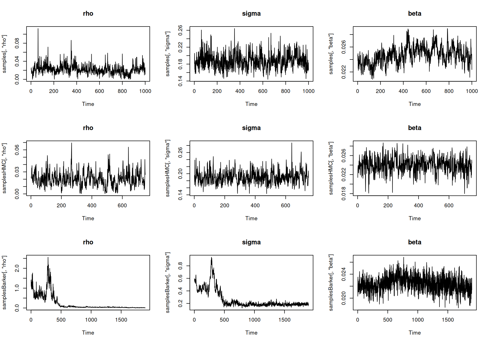
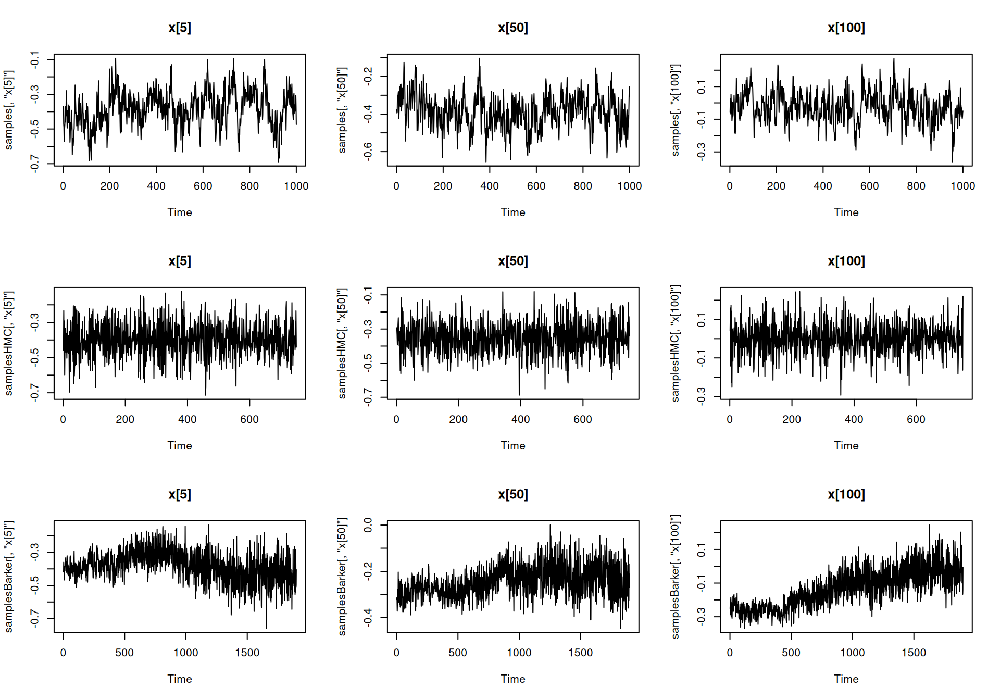
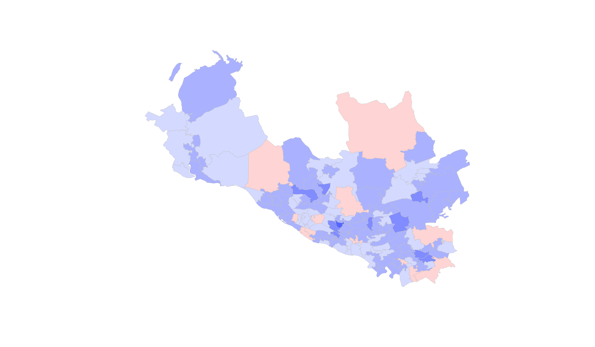
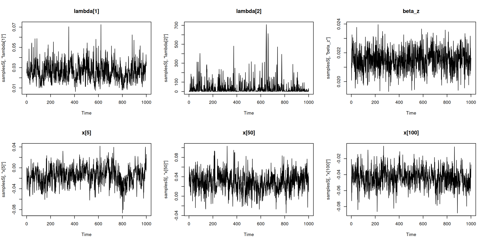
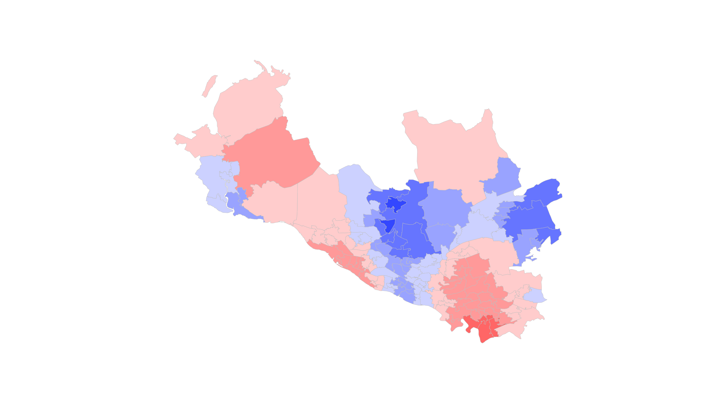

Overview of spatial models
NIMBLE Alaska ASA Workshop
Basic spatial modeling structures
\[ y_i \sim \mbox{Poi}(\exp(\eta_i)) \]
or
\[ y_i \sim \mathcal{N}(\eta_i, \sigma^2) \]
where
\[ \eta_i = Z_i \beta + x_i \]
for
\[ \eta = {\eta_1,\ldots,\eta_N}; x = {x_1,\ldots, x_N} \]
and we have the spatial process (spatial random effects / latent process)
\[ x \sim \mbox{MVN}(\mu 1, \mbox{cov} = C(\theta)) \]
for some mean \(\mu\) and (hyper)parameters \(\theta\). Given the MVN, this is a Gaussian process.
Notes:
- We could observe \(\{y_i\},i=1,\ldots,N\) at point locations (geostatistics) or in areal regions (e.g., zip codes, provinces, etc.).
- Often we have count or binary data in the areal context.
Marginalization
When the likelihood is normal, we can marginalize (integrate) over the spatial process:
\[ y \sim \mathcal{N}(\mu 1 + Z \beta, \sigma^2 I + C(\theta)) \]
This induces a covariance for the data that combines the measurement error, \(\sigma^2 I\), and the spatial structure, \(C(\theta)\).
The magnitudes of the two pieces determine how much smoothing of the data we have when estimating \(x\).
MCMC considerations
Marginalization:
- Reduces number of parameters - generally good for MCMC performance.
- Not generally possible with non-normal likelihoods, though there are data augmentation strategies that sometimes help (e.g., Albert-Chib approach).
- Sampling non-marginalized models is slow because of:
- slow computation of spatial process prior (unless can use sparsity) and
- high-dimensional parameter space to explore (regardless of sparsity).
One-at-a-time vs. block sampling: sample \(x\) as a vector or sample \(x_i|x_{-i}\) for \(i=1,\ldots,N\)?
- Joint sampling requires ways to make reasonable vector proposals.
- HMC may work well.
- One-at-a-time sampling simpler, but \(x_{-i}\) values constrain proposals for \(x_i\).
- Most problematic when \(x\) is smooth spatially as the constraints are stronger.
Specific models and NIMBLE
CAR models:
- Specified as a vector node
- NIMBLE uses one-at-a-time sampling
- Alternatively, one may get better performance by specifying joint distribution of \(x\) with sparse precision matrix and block sampling
- Stan provides capability for this:
https://mc-stan.org/users/documentation/case-studies/icar_stan.htmlhttps://osf.io/3ey65/
- HMC may work better for joint sampling than block Metropolis
- NIMBLE 2.0 will provide sparse matrix structures
- Stan provides capability for this:
SPDE models used in the INLA framework specify a sparse precision matrix.
Gaussian process and other continuous models:
- No built-in functionality – just use MVN distribution
- Generally done as a vector node
- User-defined functions and distributions
- Generally use block sampling
- HMC may work better for joint sampling than block Metropolis (and remember the uncentered parameterization)
Spline models for \(x\):
- A variation on the standard covariance-based Gaussian process
- Can use
mgcv::jagamto set up spline basis matrix and precision matrix for basis coefficients
Point process models
- No specific support, but one approach is a Poisson likelihood in a gridded representation
Intrinsic conditional autoregressive (ICAR) models
Intuitively expressed as one-at-a-time conditionals:
\[ x_i|x_{-i} \sim \mathcal{N}\left(\frac{1}{n_i} \sum_{j\in\mathcal{N}_i} x_j, \frac{1}{n_i \tau}\right) \]
So each \(x_i\) is (in the prior) centered around the mean of its neighbors and with variance inversely proportional to the number of neighbors.
Model code:
x[1:N] ~ dcar_normal(adj[1:L], weights[1:L], num[1:N],
tau, c, zero_mean)where
adjgives info on which locations are neighbors of which locations,weightsallows weighting of neighbors (often simply1as is case above),numis the number of neighbors for each location, andtauis the precision parameter.
What does ‘intrinsic’ mean?
This is an improper prior because the value of the prior doesn’t change if you shift all the values by a constant: \(x_1 + k, x_2 + k, \ldots, x_N + k\). Model implicitly includes an intercept with a flat prior.
Often one would therefore exclude an overall intercept from the model.
This is akin to a non-stationary (unit root) AR(1) model with \(\rho = 1\):
\[ x_i \sim \mathcal{N}(\rho x_{i-1}, \sigma^2) \]
which is generally frowned upon in the time series literature. But it’s often recommended in the spatial context.
Neighborhood/adjacency information
Suppose we have 4 spatial locations in a square grid:
Then we would have:
Code
num <- c(2, 2, 2, 2) # each location has two neighbors
adj <- c(2, 3, # neighbors of loc'n 1
1, 4, # neighbors of loc'n 2
1, 4, # etc.
2, 3)There are various NIMBLE and R functions for producing adj and num from shapefiles and other geographic formats.
Putting it all together: disease mapping
We’ll illustrate with data on hospital admissions due to respiratory disease in 2010 from the 134 Intermediate Geographies (IG) north of the river Clyde in the Greater Glasgow and Clyde health board.
The data are available in the CARBayesdata package and can be transformed into the neighborhood information needed by NIMBLE using functions from the spdep package. In particular, we need to provide vectors indicating which regions are neighbors of which other regions (adj), the weights for each pair of neighbors (weights), and the number of neighbors for each region (num).
As usual, the mean of the Poisson counts includes an offset for the expected count. We’ll also include a covariate, the percentage of people defined to be income-deprived in each spatial region.
Code
library(CARBayesdata, quietly = TRUE)
library(sp, quietly = TRUE)
library(spdep, quietly = TRUE)To access larger datasets in this package, install the spDataLarge
package with: `install.packages('spDataLarge',
repos='https://nowosad.github.io/drat/', type='source')`Linking to GEOS 3.12.1, GDAL 3.8.4, PROJ 9.4.0; sf_use_s2() is TRUECode
library(classInt)
## data(GGHB.IG) ## apparently no longer in CARBayesdata
load('GGHB.IG.Rda')
data(respiratorydata)
respiratorydata_sp <- merge(x = GGHB.IG, y = respiratorydata, by.x = "IG", by.y = "IZ", all.x = FALSE)
respiratorydata_sp <- spTransform(respiratorydata_sp,
CRS("+proj=longlat +datum=WGS84 +no_defs"))
if(FALSE) {
# This will produce an image on top of an OpenStreetMap webpage}
library(leaflet)
colors <- colorNumeric(palette = "YlOrRd", domain = respiratorydata_sp@data$SMR)
map2 <- leaflet(data=respiratorydata_sp) %>%
addPolygons(fillColor = ~colors(SMR), color="", weight=1,
fillOpacity = 0.7) %>%
addLegend(pal = colours, values = respiratorydata_sp@data$SMR, opacity = 1,
title="SMR") %>%
addScaleBar(position="bottomleft")
map2
}
# Instead, make a simple map in R
temp.colors<-function(n = 25) {
m <- floor(n/2)
blues <- hsv(h=.65, s=seq(1,0,length=m+1)[1:m])
reds <- hsv(h=0, s=seq(1,0,length=m+1)[1:m])
c(blues,if(n%%2!=0) "#FFFFFF", reds[m:1])
}
q <- classIntervals(respiratorydata_sp@data$SMR ,style = "fixed",
fixedBreaks=seq(0.3, 1.7, by = 0.1))
pal <- temp.colors(12)
col <- findColours(q, pal)
plot(respiratorydata_sp, col = col, border = 'grey', lwd = 0.4)
Neighborhood/adjacency information
We handle the neighborhood structure here with nb2WB from the package spdep.
Code
W_nb <- poly2nb(respiratorydata_sp, row.names = rownames(respiratorydata_sp@data))
## Determine neighborhood/adjacency information needed for neighborhood-based CAR model
nbInfo <- nb2WB(W_nb)
# A vector of indices indicating which regions are neighbors of which.
head(nbInfo$adj, n = 30) [1] 2 3 5 87 91 93 1 3 91 113 1 2 5 11 113 6 7 10 98
[20] 101 105 106 1 3 9 11 19 87 90 104Code
# A vector of weights. In this case, all weights are 1.
head(nbInfo$weights)[1] 1 1 1 1 1 1Code
# A vector of length N indicating how many neighbors each region has.
# This helps map the adj vector to each region.
nbInfo$num [1] 6 4 5 7 9 5 5 5 4 7 7 11 4 4 7 5 6 5 6 10 3 8 2 4 4
[26] 4 2 4 4 4 5 2 4 6 3 4 5 6 7 4 6 6 8 6 6 5 6 4 3 5
[51] 3 6 4 5 9 7 3 4 7 6 7 7 8 5 6 4 4 6 4 5 5 7 6 6 5
[76] 6 5 6 6 5 6 5 5 5 10 7 6 9 4 6 7 5 5 5 7 6 4 6 5 5
[101] 6 6 5 5 7 6 7 7 8 5 3 6 10 5 2 3 4 5 7 4 5 8 4 4 3
[126] 8 5 1 4 4 4 7 3 2Now we have the three pieces of information we need. We’re ready to use the dcar_normal distribution in a nimble model.
Basic disease mapping model
Code
code <- nimbleCode({
# priors
beta ~ dnorm(0, sd = 100)
sigma ~ dunif(0, 100) # prior for variance components based on Gelman (2006)
tau <- 1 / sigma^2
# latent process
x[1:N] ~ dcar_normal(adj[1:L], weights[1:L], num[1:N], tau, zero_mean = 0)
# likelihood
for(i in 1:N) {
lambda[i] <- expected[i] * exp(beta*z[i] + x[i])
y[i] ~ dpois(lambda[i])
}
})
z <- respiratorydata_sp$incomedep
z <- z - mean(z) # center for improved MCMC performance
set.seed(1)
nregions <- nrow(respiratorydata_sp)
expected <- respiratorydata_sp$expected
y <- respiratorydata_sp$observed
constants <- list(N = nregions, L = length(nbInfo$adj),
adj = nbInfo$adj, weights = nbInfo$weights, num = nbInfo$num,
z = z, expected = expected)
data <- list(y = y)
inits <- list(beta = 0, sigma = 1, x = rnorm(nregions))
model <- nimbleModel(code, constants = constants, data = data, inits = inits)Defining modelBuilding modelSetting data and initial valuesRunning calculate on model
[Note] Any error reports that follow may simply reflect missing values in model variables.Checking model sizes and dimensionsCode
cModel <- compileNimble(model)Compiling
[Note] This may take a minute.
[Note] Use 'showCompilerOutput = TRUE' to see C++ compilation details.Code
conf <- configureMCMC(model, monitors = c('beta', 'sigma', 'x'),
enableWAIC = TRUE) # We'll discuss WAIC in a bit.===== Monitors =====
thin = 1: beta, sigma, x
===== Samplers =====
RW sampler (2)
- beta
- sigma
CAR_normal sampler (1)
- x[1:134] Code
conf$printSamplers()[1] RW sampler: beta
[2] RW sampler: sigma
[3] CAR_normal sampler: x[1:134]Code
MCMC <- buildMCMC(conf)
cMCMC <- compileNimble(MCMC, project = cModel)Compiling
[Note] This may take a minute.
[Note] Use 'showCompilerOutput = TRUE' to see C++ compilation details.Code
output <- runMCMC(cMCMC, niter = 5000, nburnin = 1000, thin = 10, WAIC = TRUE)running chain 1...|-------------|-------------|-------------|-------------|
|-------------------------------------------------------|
[Warning] There are 52 individual pWAIC values that are greater than 0.4. This may indicate that the WAIC estimate is unstable (Vehtari et al., 2017), at least in cases without grouping of data nodes or multivariate data nodes.Code
samples <- output$samples
waic_car <- output$WAICResults
MCMC mixing looks pretty good (not always the case for spatial models), but should be run longer.
Code
par(mfrow = c(1,4))
ts.plot(samples[ , 'sigma'], main = 'sigma')
ts.plot(samples[ , 'x[5]'], main = 'x[5]')
ts.plot(samples[ , 'x[50]'], main = 'x[50]')
ts.plot(samples[ , 'beta'], main = 'beta')
We can look at the map of the estimated relative risks. Note the scale is very different than of the standardized mortality ratio raw values.
Code
xCols <- grep('^x\\[', colnames(samples))
xEstCAR <- colMeans(samples[ , xCols])
q <- classIntervals(xEstCAR,style = "fixed",fixedBreaks=seq(-0.8, 0.8, by = 0.1))
pal <- temp.colors(16)
col <- findColours(q, pal)
par(mfrow = c(1,1))
plot(respiratorydata_sp, col = col, border = 'grey', lwd = 0.4)
Proper CAR model
One can avoid the improper ICAR prior by using what looks like a time series AR(1) model. Omitting any weights and with mean zero, the simplest case is:
\[ x_i|x_{-i} \sim \mathcal{N}\left(\frac{1}{n_i} \rho \sum_{j\in\mathcal{N}_i} x_j, \frac{1}{n_i \tau}\right) \]
The presence of \(\rho\) causes the prior to be proper (under certain constraints on \(\rho\)).
This looks more like the usual AR(1) model with the somewhat non-intuitive property that the prior mean is a proportion of the average of the neighbors. The result is a model where the relationship of \(\rho\) to the spatial correlation structure is not intuitive and even modest spatial correlation results in very large values of \(\rho\).
Note: when the number of neighbors is roughly the same for all locations the Leroux model can be seen to be approximately a variation on this model.
Joint representation of CAR models: Markov Random Fields
ICAR model:
\[ p(x | \tau) \propto \tau^{(N-c)/2} \; e^{ -\tfrac{\tau}{2} \sum_{i\ne j} w_{ij} \, (x_i-x_j)^2 } \]
or
\[ p(x | \tau) \propto \tau^{(N-c)/2} \exp \left( - \frac{ \tau x^{T} Q x}{2} \right) \]
where \(Q\) is a (sparse) matrix based on adj, num and weights.
Proper CAR model:
\[p(x | \mu, C, M, \tau, \gamma) \sim \text{MVN} \left( \mu1, \; \tau M^{-1} (I-\rho C) \right)\]
where again the precision matrix is sparse.
Acyclic CAR/Markov random field models
You can also use a CAR structure for smoothing time series and smooth regression functions on a discrete grid.
One approach is to use dcar_normal or dcar_proper.
But in one-d, if you’re willing to fix or put a prior on the first element, you can just use model code to write out the CAR structure as an acyclic graph:
x[1] ~ dnorm(0, sd = 10)
for(i in 2:T) {
x[i] ~ dnorm(x[i-1], sd = sigma)Gaussian processes
Gaussian processes are just multivariate normal priors when considered at a finite set of locations. So we don’t need any special nimble functionality.
We would in general use a user-defined function or distribution to speed up calculation.
First we’ll define a user-defined function that calculates the covariance for a Gaussian process using an exponential covariance function.
Code
expcov <- nimbleFunction(
run = function(dists = double(2), rho = double(0), sigma = double(0)) {
returnType(double(2))
n <- dim(dists)[1]
result <- matrix(nrow = n, ncol = n, init = FALSE)
sigma2 <- sigma*sigma # calculate once
for(i in 1:n)
for(j in 1:n)
result[i, j] <- sigma2*exp(-dists[i,j]/rho)
return(result)
})This function is then used in the model code to determine the covariance matrix for the Gaussian spatial process at a finite set of locations (in this case the centroids of the spatial regions).
mu[1:N] <- mu0 * ones[1:N]
cov[1:N, 1:N] <- expcov(dists[1:N, 1:N], rho, sigma)
x[1:N] ~ dmnorm(mu[1:N], cov = cov[1:N, 1:N])As we discussed earlier, in JAGS or WinBUGS one would embed the covariance calculations in the model code, but this creates a lot of extra nodes in the graph and more overhead in doing the calculations. In NIMBLE, it’s best to just move all of that into a nimbleFunction such that it will become pure compiled code.
Also, as mentioned earlier, in this case we could have just used vectorization in our model code to avoid the user-defined function:
mu[1:N] <- mu0 * ones[1:N]
cov[1:N, 1:N] <- sigma*sigma*exp(-dists[1:N, 1:N] / rho)
x[1:N] ~ dmnorm(mu[1:N], cov = cov[1:N, 1:N])Example: revisiting the Scotland areal data
Sometimes researchers use a Gaussian process for areal data, evaluating the process values at the centroids of the areas.
More commonly the Gaussian process would be used for continuous data or applied to regularly-gridded data.
For simplicity, let’s apply the Gaussian process to the same example we used for the CAR model.
Code
code <- nimbleCode({
mu0 ~ dnorm(0, sd = 100)
sigma ~ dunif(0, 100) # prior for variance components based on Gelman (2006)
rho ~ dunif(0, 5)
beta ~ dnorm(0, sd = 100)
# latent spatial process
mu[1:N] <- mu0*ones[1:N]
cov[1:N, 1:N] <- expcov(dists[1:N, 1:N], rho, sigma)
x[1:N] ~ dmnorm(mu[1:N], cov = cov[1:N, 1:N])
# likelihood
for(i in 1:N) {
lambda[i] <- expected[i] * exp(beta*z[i] + x[i])
y[i] ~ dpois(lambda[i])
}
})
locs <- as.matrix(respiratorydata_sp@data[ , c('easting', 'northing')]) / 1e5
dists <- as.matrix(dist(locs))
dists <- dists / max(dists) # normalize to max distance of 1
constants <- list(N = nregions, dists = dists, ones = rep(1, nregions),
z = z, expected = expected)
data <- list(y = y)
inits <- list(beta = 0, mu0 = 0, sigma = 1, rho = 0.2)
set.seed(1)
## setup initial spatially-correlated latent process values
inits$cov <- expcov(dists, inits$rho, inits$sigma)
inits$x <- t(chol(inits$cov)) %*% rnorm(nregions)
inits$x <- inits$x[ , 1] # so can give nimble a vector rather than one-column matrix
model <- nimbleModel(code, constants = constants, data = data, inits = inits)Defining modelBuilding modelSetting data and initial valuesRunning calculate on model
[Note] Any error reports that follow may simply reflect missing values in model variables.Checking model sizes and dimensionsCode
cModel <- compileNimble(model)Compiling
[Note] This may take a minute.
[Note] Use 'showCompilerOutput = TRUE' to see C++ compilation details.Running an MCMC
Code
conf <- configureMCMC(model, enableWAIC = TRUE)===== Monitors =====
thin = 1: beta, mu0, rho, sigma
===== Samplers =====
RW_block sampler (1)
- x[1:134]
RW sampler (4)
- mu0
- sigma
- rho
- betaCode
conf$addMonitors('x')thin = 1: beta, mu0, rho, sigma, xCode
MCMC <- buildMCMC(conf)
cMCMC <- compileNimble(MCMC, project = cModel) Compiling
[Note] This may take a minute.
[Note] Use 'showCompilerOutput = TRUE' to see C++ compilation details.Code
system.time(output <- runMCMC(cMCMC, niter = 60000, nburnin = 10000, thin = 50, WAIC = TRUE)) # 400 seconds (on an older machine)running chain 1...|-------------|-------------|-------------|-------------|
|-------------------------------------------------------|
[Warning] There are 43 individual pWAIC values that are greater than 0.4. This may indicate that the WAIC estimate is unstable (Vehtari et al., 2017), at least in cases without grouping of data nodes or multivariate data nodes. user system elapsed
419.253 431.147 164.854 Code
samples <- output$samples
waic_gp <- output$WAICBefore we look at the results, let’s also try HMC and Barker.
Trying HMC
We’ll also try HMC, since it often does well in problems with a complicated dependence structure (at least on a per iteration basis). We’ll need to modify expcov to allow for derivatives.
Code
expcov <- nimbleFunction(
run = function(dists = double(2), rho = double(0), sigma = double(0)) {
returnType(double(2))
n <- dim(dists)[1]
result <- matrix(nrow = n, ncol = n, init = FALSE)
sigma2 <- sigma*sigma # calculate once
for(i in 1:n)
for(j in 1:n)
result[i, j] <- sigma2*exp(-dists[i,j]/rho)
return(result)
}, buildDerivs = list(run = list(ignore = c('i','j'))))
calc_fun <- nimbleFunction(
run = function(mu = double(0), cov = double(2), w = double(1)) {
returnType(double(1))
U <- chol(cov)
result <- (mu + t(U) %*% w)[ , 1] # crossprod() not available
return(result)
}, buildDerivs = TRUE)Code
code_hmc <- nimbleCode({
mu0 ~ dnorm(0, sd = 100)
sigma ~ dunif(0, 100) # prior for variance components based on Gelman (2006)
rho ~ dunif(0, 5)
beta ~ dnorm(0, sd = 100)
# latent spatial process
cov[1:N, 1:N] <- expcov(dists[1:N, 1:N], rho, sigma)
x[1:N] <- calc_fun(mu0, cov[1:N, 1:N], w[1:N]) # uncentered parameterization
# likelihood
lambda[1:N] <- expected[1:N] * exp(beta*z[1:N] + x[1:N])
for(i in 1:N) {
y[i] ~ dpois(lambda[i])
w[i] ~ dnorm(0, 1)
}
})
inits <- list(beta = 0, mu0 = 0, sigma = 1, rho = 0.2)
model <- nimbleModel(code_hmc, constants = constants, inits = inits, data = data,
buildDerivs = TRUE)Defining model [Note] 'ones' is provided in 'constants' but not used in the model code and is being ignored.Building modelSetting data and initial valuesRunning calculate on model
[Note] Any error reports that follow may simply reflect missing values in model variables.Checking model sizes and dimensions [Note] This model is not fully initialized. This is not an error.
To see which variables are not initialized, use model$initializeInfo().
For more information on model initialization, see help(modelInitialization).Code
cModel <- compileNimble(model)Compiling
[Note] This may take a minute.
[Note] Use 'showCompilerOutput = TRUE' to see C++ compilation details.Code
library(nimbleHMC)
hmc <- buildHMC(model, monitors = c(model$getNodeNames(topOnly = TRUE), 'x'))===== Monitors =====
thin = 1: beta, mu0, rho, sigma, w, x
===== Samplers =====
NUTS sampler (1)
- mu0, sigma, rho, beta, w[1], w[2], w[3], w[4], w[5], w[6], w[7], w[8], w[9], w[10], w[11], w[12], w[13], w[14], w[15], w[16], w[17], w[18], w[19], w[20], w[21], w[22], w[23], w[24], w[25], w[26], w[27], w[28], w[29], w[30], w[31], w[32], w[33], w[34], w[35], w[36], w[37], w[38], w[39], w[40], w[41], w[42], w[43], w[44], w[45], w[46], w[47], w[48], w[49], w[50], w[51], w[52], w[53], w[54], w[55], w[56], w[57], w[58], w[59], w[60], w[61], w[62], w[63], w[64], w[65], w[66], w[67], w[68], w[69], w[70], w[71], w[72], w[73], w[74], w[75], w[76], w[77], w[78], w[79], w[80], w[81], w[82], w[83], w[84], w[85], w[86], w[87], w[88], w[89], w[90], w[91], w[92], w[93], w[94], w[95], w[96], w[97], w[98], w[99], w[100], w[101], w[102], w[103], w[104], w[105], w[106], w[107], w[108], w[109], w[110], w[111], w[112], w[113], w[114], w[115], w[116], w[117], w[118], w[119], w[120], w[121], w[122], w[123], w[124], w[125], w[126], w[127], w[128], w[129], w[130], w[131], w[132], w[133], w[134] Code
cHMC <- compileNimble(hmc, project = model)Compiling
[Note] This may take a minute.
[Note] Use 'showCompilerOutput = TRUE' to see C++ compilation details.Code
set.seed(1)
system.time(samplesHMC <- runMCMC(cHMC, niter = 1500, nburnin = 750)) # 1100 sec. on an older machinerunning chain 1... [Note] NUTS sampler (nodes: mu0, sigma, rho, beta, w[1], w[2], w[3], w[4], w[5], w[6], w[7], w[8], w[9], w[10], w[11], w[12],...) is using 750 warmup iterations.
Since `warmupMode` is 'default' and `nburnin` > 0,
the number of warmup iterations is equal to `nburnin`.
The burnin samples will be discarded, and all samples returned will be post-warmup.
|-------------|-------------|-------------|-------------|
|-------------------------------------------------------| user system elapsed
485.830 0.654 492.149 That takes a while because of the cost of gradient evaluation. Note also that HMC timing can vary widely with different initial values.
Trying the Barker approach
Finally let’s also try the Barker sampler in place of the block RW sampler on the spatial process values. We’ll use the uncentered parameterization used for HMC, though I don’t know if that is better for Barker.
Code
inits <- list(beta = 0, mu0 = 0, sigma = 1, rho = 0.2)
model <- nimbleModel(code_hmc, constants = constants, inits = inits, data = data,
buildDerivs = TRUE)Defining model [Note] 'ones' is provided in 'constants' but not used in the model code and is being ignored.Building modelSetting data and initial valuesRunning calculate on model
[Note] Any error reports that follow may simply reflect missing values in model variables.Checking model sizes and dimensions [Note] This model is not fully initialized. This is not an error.
To see which variables are not initialized, use model$initializeInfo().
For more information on model initialization, see help(modelInitialization).Code
cModel <- compileNimble(model)Compiling
[Note] This may take a minute.
[Note] Use 'showCompilerOutput = TRUE' to see C++ compilation details.Code
conf <- configureMCMC(model, monitors = c(model$getNodeNames(topOnly = TRUE), 'x'))===== Monitors =====
thin = 1: beta, mu0, rho, sigma, w, x
===== Samplers =====
RW sampler (138)
- mu0
- sigma
- rho
- beta
- w[] (134 elements)Code
conf$removeSampler('w')
conf$addSampler('w[1:134]', 'barker')
MCMC <- buildMCMC(conf)
cMCMC <- compileNimble(MCMC, project = cModel)Compiling
[Note] This may take a minute.
[Note] Use 'showCompilerOutput = TRUE' to see C++ compilation details.Code
set.seed(1)
system.time(samplesBarker <- runMCMC(cMCMC, niter = 20000, nburnin = 1000, thin = 10)) # 270 sec. on an older machinerunning chain 1...|-------------|-------------|-------------|-------------|
|-------------------------------------------------------| user system elapsed
55.725 0.056 55.789 Burnin is slow for the Barker case for the hyperparameters – some options:
- consider other non-default (e.g., slice) samplers for the hyperparameters,
- better starting values, or
- different tuning parameter values for the Barker sampler.
Results
Note that mixing in this model is somewhat slow (often the case for spatial models), but is not terrible. The slow mixing is because of the need to explore the correlated spatial process, x, which is generally more difficult in non-conjugate settings, such as this one, where the observations are Poisson and the prior for the latent process is normal.
Code
par(mfrow = c(3,3))
ts.plot(samples[ , 'rho'], main = 'rho')
ts.plot(samples[ , 'sigma'], main = 'sigma')
ts.plot(samples[ , 'beta'], main = 'beta')
ts.plot(samplesHMC[ , 'rho'], main = 'rho')
ts.plot(samplesHMC[ , 'sigma'], main = 'sigma')
ts.plot(samplesHMC[ , 'beta'], main = 'beta')
ts.plot(samplesBarker[ , 'rho'], main = 'rho')
ts.plot(samplesBarker[ , 'sigma'], main = 'sigma')
ts.plot(samplesBarker[ , 'beta'], main = 'beta')
Code
par(mfrow = c(3,3))
ts.plot(samples[ , 'x[5]'], main = 'x[5]')
ts.plot(samples[ , 'x[50]'], main = 'x[50]')
ts.plot(samples[ , 'x[100]'], main = 'x[100]')
ts.plot(samplesHMC[ , 'x[5]'], main = 'x[5]')
ts.plot(samplesHMC[ , 'x[50]'], main = 'x[50]')
ts.plot(samplesHMC[ , 'x[100]'], main = 'x[100]')
ts.plot(samplesBarker[ , 'x[5]'], main = 'x[5]')
ts.plot(samplesBarker[ , 'x[50]'], main = 'x[50]')
ts.plot(samplesBarker[ , 'x[100]'], main = 'x[100]')
We can look at the map of the estimated relative risks. Note the scale is very different than of the standardized mortality ratio raw values.
Code
xCols <- grep('^x\\[', colnames(samples))
xEstGP <- colMeans(samples[ , xCols])
q <- classIntervals(xEstGP, style = "fixed", fixedBreaks=seq(-1.2, 1.2, by = 0.2))
pal <- temp.colors(12)
col <- findColours(q, pal)
par(mfrow = c(1,1))
plot(respiratorydata_sp, col = col, border = 'grey', lwd = 0.4)
Vectorization and alternative samplers
It would make sense to use vectorization here (as shown for the HMC example above), since we are using a block sampler on x[1:N].
# Basic vectorization of a deterministic assignment:
lambda[1:N] <- expected[1:N] * exp(beta*z[1:N] + x[1:N])
for(i in 1:N) {
y[i] ~ dpois(lambda[i])
}
# Also could create a user-defined distribution to vectorize the likelihood
lambda[1:N] <- expected[1:N] * exp(beta*z[1:N] + x[1:N])
y[1:N] ~ dpois_vec(lambda[1:N]) # dpois_vec would have to be writtenFinally, it would be interesting to try Laplace approximation or NIMBLE’s new INLA-like deterministic nested approximation here.
Prediction at unobserved locations
One generally wants to be thoughtful about predictive nodes (e.g., spatial process values at new locations). See Section 7.2.3.4 of the manual.
- Don’t condition on those nodes when in core MCMC sampler – NIMBLE samples predictive nodes as a separate step at the end of each iteration
- Don’t sample for iterations that won’t be saved (due to thinning) – NIMBLE allows one to handle this with posterior predictive derived quantities.
In some cases it may be faster to sample unobserved locations “offline”, namely separately after the MCMC (e.g., when intensive linear algebra computations are needed)
We’d need:
- a function that samples from the MVN conditional of the unobserved \(x^*\) values given \(x\) and relevant parameters of the spatial process, and
- to take the draws from the MCMC for \(x\) and relevant parameters, and apply the function.
Could be done in R or, for larger problems, in a nimbleFunction that is compiled for speed, pulling the draws from the MCMC’s mvSamples data structure and inserting into the model with values(model, nodes) <-.
This is the exercise at the end of the module. Use of nimbleFunctions for similar post hoc processing is part of Module 10.
Large spatial models and spatial nonstationarity
The BayesNSGP package has functionality for fitting such models efficiently based on recent advances in the literature.
Set up for “vanilla” spatial models of particular structures, but some of the code might be repurposed for use in more general hierarchical models.
Setting up splines
The mgcv package has a very sophisticated set of tools for fitting smooth spatial, temporal, spatio-temporal, and regression relationships using a penalized likelihood approach. The penalty is applied to the spline basis coefficients.
Penalized likelihood can be seen as equivalent to a Bayesian approach, so we can take the spline basis matrix and penalty matrix = prior precision matrix from mgcv and use in a NIMBLE (or JAGS or WinBUGS) model.
\[ x = B \beta \]
\[ \beta \sim \mbox{MVN}(0, \mbox{prec} = Q) \]
Code
K <- 40 # number of spline basis functions
# fit a simple GAM to get a sense for number of basis functions; K = 40 might be too small...
if(FALSE) {
mod <- gam(y ~ log(expected) + z + s(locs, k = K), family = 'poisson')
summary(mod)
fit <- predict(mod, type = 'terms')[,3]
}
# ignore z to get basis info, but that may affect initial values.
out <- mgcv::jagam(y ~ log(expected) + s(locs, k = K) -1, family = 'poisson',
na.action = na.pass, file = 'blank.jags')
B <- out$jags.data$X[ , -1]
K <- ncol(B) # actually only 39 basis functions
## two components of precision matrix to ensure propriety
## of prior on coeffs (see Wood (2016) J Statistical Software)
Q1 <- out$jags.data$S1[ , 1:K]
Q2 <- out$jags.data$S1[ , (K+1):(2*K)] Setting up the model
We’ll stick with a simple spatial model (which means this could have simply been fit using mgcv::gam):
Code
codeS <- nimbleCode({
mu0 ~ dflat()
beta_z ~ dnorm(0, sd = 100)
for(i in 1:2)
lambda[i] ~ dgamma(.05, .005) # based on jagam defaults
# latent process is product of (known) spline basis and (unknown) coefficients
# two components to ensure propriety of prior on coeffs
prec[1:K, 1:K] <- lambda[1] * Q1[1:K, 1:K] + lambda[2] * Q2[1:K, 1:K]
beta_x[1:K] ~ dmnorm(zeros[1:K], prec[1:K, 1:K])
x[1:N] <- (B[1:N, 1:K] %*% beta_x[1:K])[,1]
# likelihood
for(i in 1:N) {
mu[i] <- expected[i] * exp(mu0 + beta_z*z[i] + x[i])
y[i] ~ dpois(mu[i])
}
})
constantsS <- list(Q1 = Q1, Q2 = Q2, B = B, K = K, N = nregions, z = z, zeros = rep(0, K),
expected = expected)
dataS <- list(y = y)
initsS <- list(beta_z = 0)
## Use inits from jagam, but note that jagam call did not use 'z' or have an intercept
initsS$beta_x <- out$jags.ini$b[2:(K+1)]
initsS$mu0 <- 0
initsS$lambda <- out$jags.ini$lambda
set.seed(1)
modelS <- nimbleModel(codeS, constants = constantsS, data = dataS, inits = initsS)Defining modelBuilding modelSetting data and initial valuesRunning calculate on model
[Note] Any error reports that follow may simply reflect missing values in model variables.Checking model sizes and dimensionsCode
cModelS <- compileNimble(modelS)Compiling
[Note] This may take a minute.
[Note] Use 'showCompilerOutput = TRUE' to see C++ compilation details.Running an MCMC
Code
confS <- configureMCMC(modelS)===== Monitors =====
thin = 1: beta_z, lambda, mu0
===== Samplers =====
RW_block sampler (1)
- beta_x[1:39]
RW sampler (4)
- mu0
- beta_z
- lambda[] (2 elements)Code
confS$removeSamplers('beta_x[1:39]')
# Using non-default value of 0.25 for a tuning parameter of the adaptive block sampler
# helps a lot compared to default NIMBLE or to JAGS
confS$addSampler('beta_x[1:39]', 'RW_block', control = list(adaptFactorExponent = 0.25)) [Note] Assigning an RW_block sampler to nodes with very different scales can result in low MCMC efficiency. If all nodes assigned to RW_block are not on a similar scale, we recommend providing an informed value for the "propCov" control list argument, or using the "barker" sampler instead.Code
confS$addMonitors('x', 'beta_x')thin = 1: beta_x, beta_z, lambda, mu0, xCode
mcmcS <- buildMCMC(confS)
cmcmcS <- compileNimble(mcmcS, project = cModelS)Compiling
[Note] This may take a minute.
[Note] Use 'showCompilerOutput = TRUE' to see C++ compilation details.Code
samplesS <- runMCMC(cmcmcS, niter = 100000, nburnin = 20000, thin = 80)running chain 1...|-------------|-------------|-------------|-------------|
|-------------------------------------------------------|Results
Mixing is decent (though that was a pretty long run). It would be worth exploring further to understand the posterior correlation structure and consider other sampling strategies.
Code
par(mfrow = c(2,3))
ts.plot(samplesS[ , 'lambda[1]'], main = 'lambda[1]')
ts.plot(samplesS[ , 'lambda[2]'], main = 'lambda[2]')
ts.plot(samplesS[ , 'beta_z'], main = 'beta_z')
ts.plot(samplesS[ , 'x[5]'], main = 'x[5]')
ts.plot(samplesS[ , 'x[50]'], main = 'x[50]')
ts.plot(samplesS[ , 'x[100]'], main = 'x[100]')
Here are the spatial estimates. Pretty different (much smoother) than the CAR or GP results. We might want to explore larger values of K.
Code
xCols <- grep('^x\\[', colnames(samplesS))
xEstSpl <- colMeans(samplesS[ , xCols])
q <- classIntervals(xEstSpl, style = "fixed", fixedBreaks=seq(-0.2, 0.2, by = 0.04))
pal <- temp.colors(10)
col <- findColours(q, pal)
par(mfrow = c(1,1))
plot(respiratorydata_sp, col = col, border = 'grey', lwd = 0.4)
Final notes
mgcv can handle all sorts of sophisticated smoothing problems, including:
- tensor products of space and time or of different covariates
- cyclic splines (e.g., for seasonality, diurnal behavior)
- monotonicity and other shape constraints
- boundary effects
For example, Stoner and Economou (2020; Computational Statistics and Data Analysis; https://arxiv.org/abs/1906.03846) used mgcv-based spline terms in a NIMBLE model for precipitation, handling seasonality with cyclic splines.
Model selection with WAIC
Some considerations for model selection criteria:
- There are various quantitative measures for comparing models, often based on trying to estimate how well models will fit new data.
- Simply evaluating the log-likelihood won’t generally work because of overfitting.
- Information criteria such as AIC, DIC, and WAIC attempt to penalize for the flexibility of the model based on the number of parameters in the model.
- In a Bayesian model, shrinkage means that the “number of parameters” is not well-defined.
- In recent years, WAIC has gained popularity as a more principled approach than DIC.
WAIC: some details
WAIC tries to estimate the expected pointwise log predictive density for a new dataset, \(\{\tilde{y}_i\}\):
\[ \sum_{i=1}^n E_{\tilde{y}}(\log p_{post}(\tilde{y}_i)) \]
Two quantities are used:
- Pointwise log predictive density in-sample: \(\sum_{i=1}^n \log \left(\frac{1}{M} \sum_{j=1}^M p(y_i | \theta^{(j)}) \right)\)
- An estimate of the effective number of parameters (number of unconstrained parameters)
The second piece adjusts for the bias from overfitting.
WAIC uses the full posterior, so does not rely on the plug-in predictive density as in DIC.
WAIC results
Let’s compare WAIC for the CAR and GP versions of the spatial modeling.
Code
waic_carnimbleList object of type waicNimbleList
Field "WAIC":
[1] 1044.802
Field "lppd":
[1] -459.8549
Field "pWAIC":
[1] 62.54595Code
waic_gpnimbleList object of type waicNimbleList
Field "WAIC":
[1] 1024.1
Field "lppd":
[1] -456.6078
Field "pWAIC":
[1] 55.44203Interpreting the numerical values:
- WAIC is on the deviance scale:
- Lower is better
- AIC penalizes the log-likelihood by two when adding a parameter, to give a sense for the scale of things.
Caveats:
- These are based on MCMC runs that are likely too short.
- Not clear how appropriate basic WAIC is for correlated data.
WAIC can be tricky
There are different variations on WAIC depending on what predictive distribution is of interest:
- New observations (conditional WAIC, default in NIMBLE)
- For example, predicting new E. cervi observations for existing farms
- New groups (often represented as a new random effect) (marginal WAIC)
- For example, predicting new E. cervi observations for new farms without any data
- New observations (conditional WAIC, default in NIMBLE)
WAIC relies on being able to partition (group) the data into
npieces; not clear how to use for spatial or temporally-correlated data and other complicated situations- By default in NIMBLE, observations are treated individually (not grouped), unless you use a multivariate distribution.
- You’ll can also group the data as desired, e.g., grouping all temporal observations for each patient in a longitudinal study.
See Gelman, A., J. Hwang, and A. Vehtari. 2014. “Understanding Predictive Information Criteria for Bayesian Models.” Statistics and Computing 24 (6): 997–1016.
Exercise
Let’s pull together setting up post-hoc posterior sampling of the Gaussian process at unobserved locations, \(x^*\). We’ll continue to use the Scotland data, but it’s artificial in that with areal data settings, one generally doesn’t have new locations. But in more standard GP settings, this is a standard problem.
\[ x^{*} \sim \mbox{MVN}(\mu1 + C_{21}C_{11}^{-1}(x-\mu1), C_{22}-C_{21} C_{11}^{-1} C_{21}^\top) \]
Let’s take these to be the new locations, and then calculate the distance matrices we need.
Code
newlocs <- rbind(c(2.6, 6.7), c(2.61, 6.69), c(2.59, 6.69))
dist11 <- fields::rdist(locs)
dist21 <- fields::rdist(newlocs, locs)
dist22 <- fields::rdist(newlocs)Code
sample_xstar <- nimbleFunction(
# need types for inputs
run = function(x = double(1), mu = double(1), muNew = double(1), sigma = double(0), rho = double(0),
dist11 = double(2), dist22 = double(2), dist21 = double(2)) {
returnType(double(1))
n <- length(muNew)
sigma2 <- sigma*sigma
C22 <- sigma2 * exp(-dist22 / rho)
C11 <- sigma2 * exp(-dist11 / rho)
C21 <- sigma2 * exp(-dist21 / rho)
# Note that this could be made a bit more efficient by using the Cholesky
# decomposition rather than solve().
xstar <- muNew + (C21 %*% solve(C11, x - mu))[,1]
xstar <- xstar + (t(chol(C22 - C21 %*% solve(C11, t(C21)))) %*% rnorm(n))[,1]
return(xstar)
})
get_samples <- nimbleFunction(
run = function(samples = double(2), z = double(1), zNew = double(1),
dist11 = double(2), dist22 = double(2), dist21 = double(2)) {
returnType(double(2))
m <- dim(samples)[1]
nstar <- dim(dist21)[1]
output <- matrix(0, nrow = m, ncol = nstar)
for(i in 1:m) {
# Extract parameter values from the input matrix based on numeric column indexes.
# Inelegant because hard-coded based on looking at column names of samples matrix.
mu0 <- samples[i, 2]
beta <- samples[i, 1]
rho <- samples[i, 3]
sigma <- samples[i, 4]
x <- samples[i, 5:138]
mu <- mu0 + beta*z
muNew <- mu0 + beta*zNew
# Get other parameters
output[i, ] <- sample_xstar(x, mu, muNew, sigma, rho, dist11, dist22, dist21)
}
return(output)
}
)
zNew <- runif(3) # fake new z values
## Now compare uncompiled and compiled speed of carrying out the sampling.
set.seed(1)
xstar_samples <- get_samples(samples, constants$z, zNew, dist11, dist22, dist21)
cget_samples <- compileNimble(get_samples)
set.seed(1)
xstar_samples2 <- cget_samples(samples, constants$z, zNew, dist11, dist22, dist21)We could also write this to use the mvSamples modelValues object that stores all the MCMC output instead of using the R matrix representation of the samples.
Appendix: using JAGS instead (for the spline-based model)
For the spline-based or GP-based models (but not the CAR) you could use JAGS. I didn’t do a thorough exploration but default NIMBLE MCMC and JAGS seemed similar for the spline-based model (didn’t try the GP in JAGS), while modifying the RW_block sampler in NIMBLE improved mixing a lot.
library(rjags)
load.module('glm')
jm <-jags.model("test.jags",data=c(data,constants), inits = inits,n.chains=1)
list.samplers(jm)
sam <- jags.samples(jm,c("x","lambda","beta_x","mu0"),n.iter=50000,thin=10)
samplesJags <- cbind(as.mcmc.list(sam[[1]])[[1]],as.mcmc.list(sam[[2]])[[1]],as.mcmc.list(sam[[3]])[[1]],as.mcmc.list(sam[[4]])[[1]])The test.jags file should contain this code:
model{
mu0 ~ dnorm(0,1e-6)
beta_z ~ dnorm(0, 1e-4)
for(i in 1:2)
lambda[i] ~ dgamma(.05, .005) # based on jagam defaults
## two components to ensure propriety of prior on coeffs
prec[1:K, 1:K] <- lambda[1] * Q1[1:K, 1:K] + lambda[2] * Q2[1:K, 1:K]
beta_x[1:K] ~ dmnorm(zeros[1:K], prec[1:K, 1:K])
x[1:N] <- B%*% beta_x
# likelihood
for(i in 1:N) {
mu[i] <- expected[i] * exp(mu0 + beta_z*z[i] + x[i])
y[i] ~ dpois(mu[i])
}
}